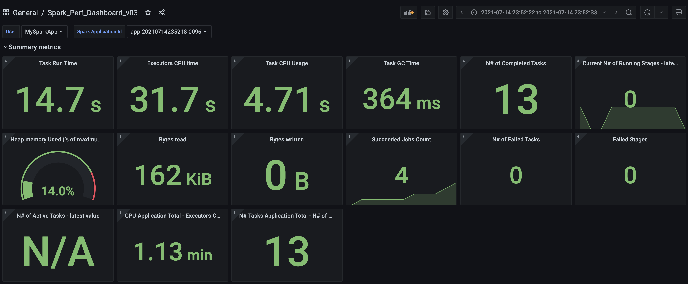
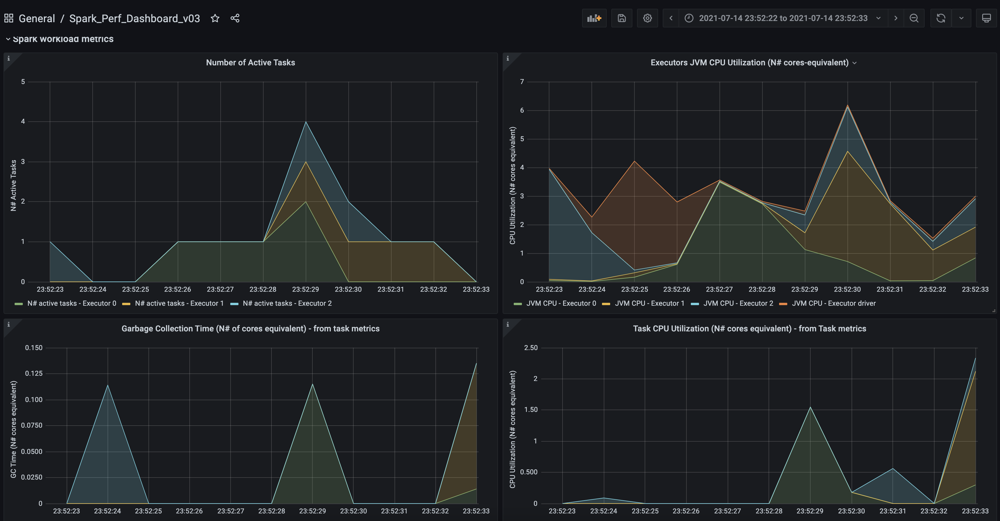
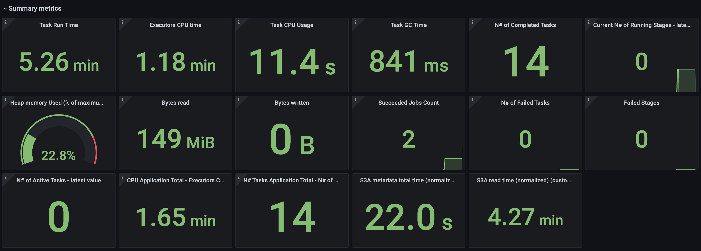
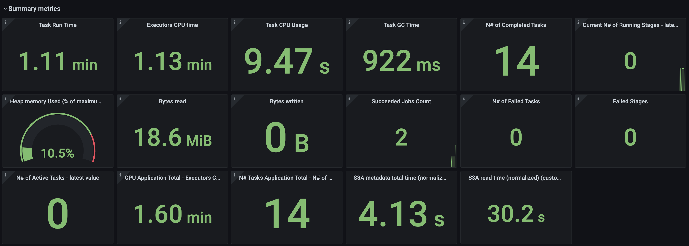
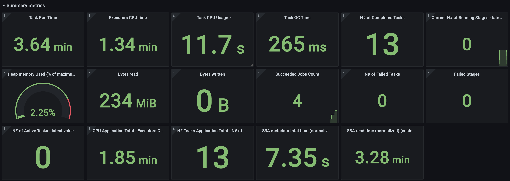
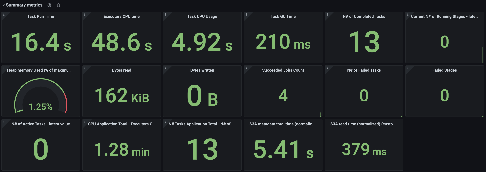
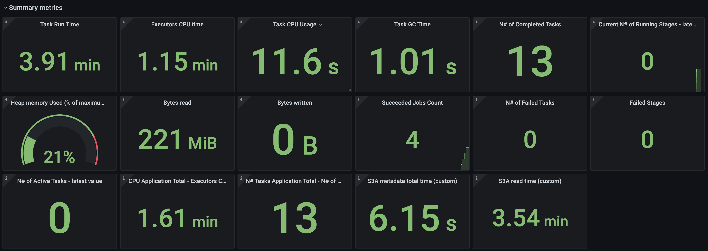
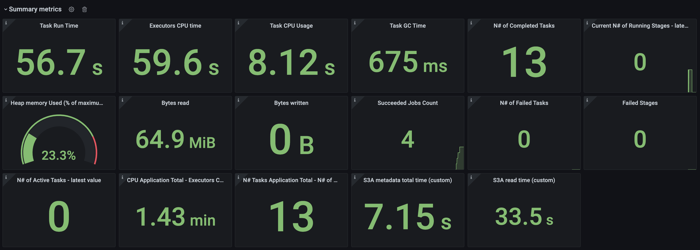

Summer Intern Project Summary
Spark Metrics Monitoring
Goals
- Making all Spark metrics available at one place.
- Creating dashboard to easily visualise metrics.
- Adding custom metrics of S3A.
Dashboard For Metrics Provided By Spark
Task breakdown
- Making metrics data available in InfluxDB
- Query InfluxDB data in Grafana Dashboard
Making metrics data available in InfluxDB
Spark don't have an InfluxDB sink, but it do have a graphite source. InfluxDB also have 'protocol support' to input graphite data directly.
Enabling and configuring graphite sink of spark and graphite source of InfluxDB does the job.
Making metrics data available in InfluxDB
Once data is available in InfluxDB, Grafana dashboard can be created and can query data that is in InfluxDB using InfluxQL.
Result
Summary Metrics
Workload Metrics
And Many More ....
Adding S3A Metrics
Create class to hold/get/increment value of metrics.
public class S3Ametrics {
private static AtomicLong someMetric = new AtomicLong();
public static void incrementMetric(Long value) {
someMetric.addAndGet(value);
}
public static long getMetric() {
return someMetric.get();
}
}
Adding S3A Metrics
Spark Uses dropwizard's metric package for collecing metrics and reporting it to various sinks including Graphite sink.
Register S3A metrics using 'Spark Plugin' to make Spark push it to Graphite.
Adding S3A Metrics
class S3AMetricsReg extends SparkPlugin {
def s3aMetrics(metricRegistry: MetricRegistry): Unit= {
metricRegistry.register(MetricRegistry.name("S3AMetric"), new Gauge[Long] {
override def getValue: Long = {
org.apache.hadoop.fs.s3a.S3AMetric.getMetric
}
})
}
// This code will run in driver
override def driverPlugin(): DriverPlugin = {
new DriverPlugin() {
override def init(sc: SparkContext, myContext: PluginContext): JMap[String, String] = {
s3aMetrics(myContext.metricRegistry)
null
}
}
}
//This code will run in each executor
override def executorPlugin(): ExecutorPlugin = {
new ExecutorPlugin {
override def init(myContext:PluginContext, extraConf:JMap[String, String]) = {
// Don't register executor plugin if in local mode
if (! myContext.conf.get("spark.master").startsWith("local")) {
s3aMetrics(myContext.metricRegistry)
}
}
}
}
}
Increment/Change The Metrics!!
Spark uses hadoop-aws module to read/write files to AWS S3.
In order to increment/change metrics created, Hadoop's code has to be modified to calculate required metrics.
Results
Spark Query Optimisation With Help Of Dashboard
Limit 1 Query
Query: SELECT * FROM table LIMIT 1
Problem : Spark reading all data even for getting one row from parquet file.
Compare metadata time, read time and cpu time.
Problem Analysis
Spark don't wait to read footer of parquet files instead it estimates number of tasks to start.
- Step 1: totalBytes = (sum of size of all parquet files) + (number of parquet files) * (4 * 1024 * 1024)
- Step 2: bytesPerCore = totalBytes / (spark defualt parallelism)
- Step 3: maxSplitBytes = max(bytesPerCore, (spark max partition bytes))
- Step 4: spark will start ceil(totalBytes/maxSplitBytes) number of tasks.
Optimisation
Decrease row group size to give more number of row group to a single task.
Now each task will read only one row group to produce one record. Thus, Spark will not read whole data.
NOTE: decreasing row group size can have implications on other query (if there are other queries on same parquet file)
After decreasing row group size,
Equal To Query For Integer Column
Query: SELECT * FROM table WHERE likes=10000
Problem : Spark reading too much unrequired data. Upon analysis of parquet file, I found no dictionary being stored for column on which query was applied.
Compare metadata time, read time and cpu time.
Optimisation
Make parquet store dictionary for 'likes' column either by increasing limit of dictionary size or decreasing row group size.
After making dictionary available,
Equal To Query For String Columns
Query: SELECT * FROM table WHERE user_description='Mother'
Problem : Once again Spark reading data that could have been skipped with a dictionary.
Optimisation
Increased max dictionary size to 10 MB (in short made dictionary available for that column).
After Optimisation
Learnings


Thank You
Special thanks to Amit Kumar for guiding me.
Link to Github : https://github.com/Rushi11111/SparkMetricsAndQueryOptimisation